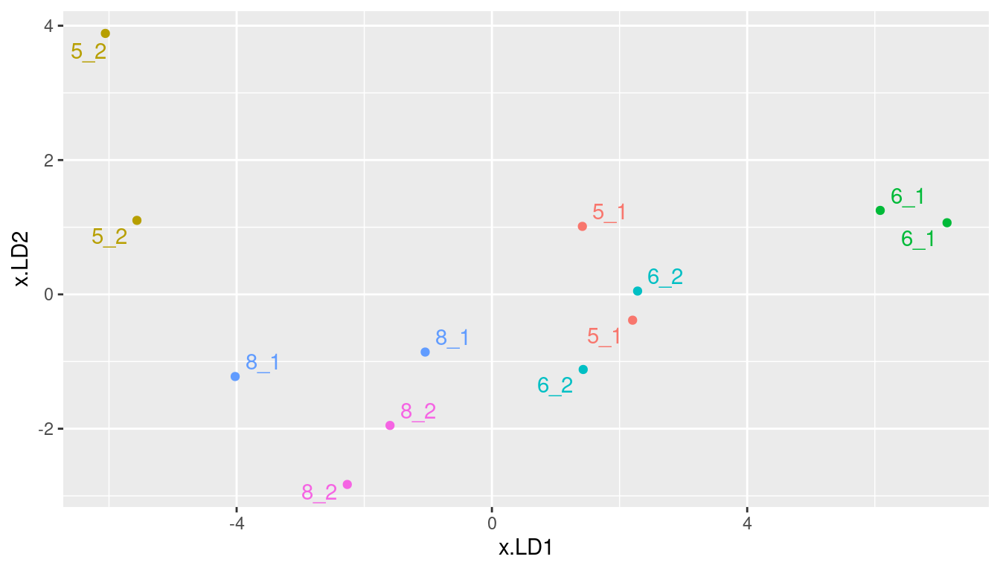
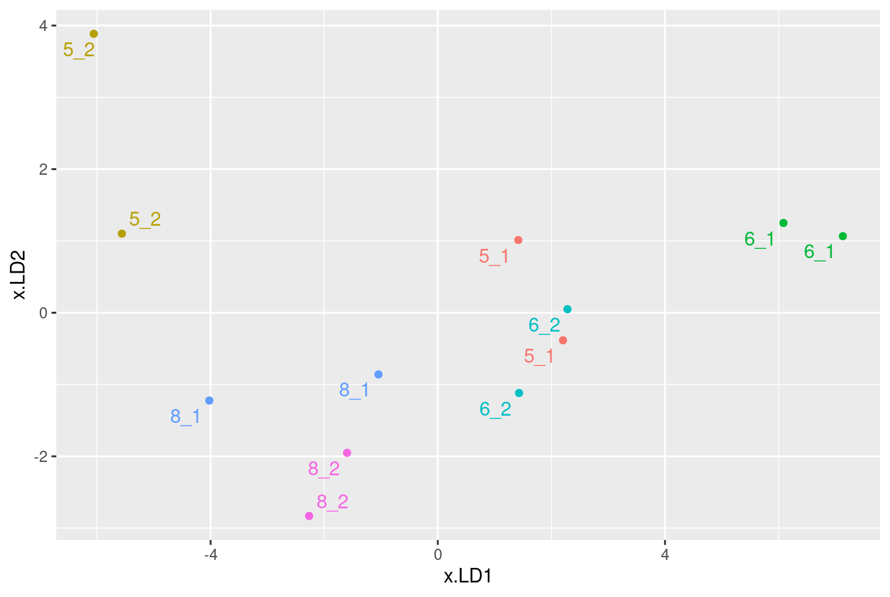
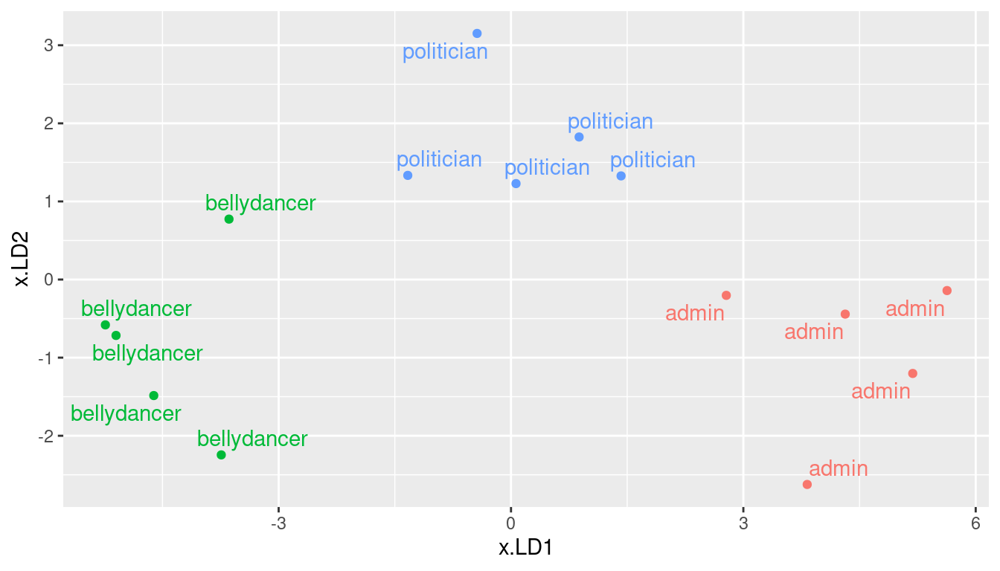

library(MASS)
library(tidyverse)
library(ggrepel)
library(ggbiplot)
library(MVTests) # for Box M test
library(conflicted)
conflict_prefer("arrange", "dplyr")
conflict_prefer("summarize", "dplyr")
conflict_prefer("select", "dplyr")
conflict_prefer("filter", "dplyr")
conflict_prefer("mutate", "dplyr")Discrimimant Analysis
Discriminant analysis
ANOVA and MANOVA: predict a (counted/measured) response from group membership.
Discriminant analysis: predict group membership based on counted/measured variables.
Covers same ground as logistic regression (and its variations), but emphasis on classifying observed data into correct groups.
Does so by searching for linear combination of original variables that best separates data into groups (canonical variables).
Assumption here that groups are known (for data we have). If trying to “best separate” data into unknown groups, see cluster analysis.
Packages
ggrepelallows labelling points on a plot so they don’t overwrite each other.ggbiplotusesplyrrather thandplyr, which has functions by similar names.
About select
Both
dplyr(intidyverse) andMASShave a function calledselect, and they do different things.How do you know which
selectis going to get called?With
library, the one loaded last is visible, and others are not.Thus we can access the
selectindplyrbut not the one inMASS. If we wanted that one, we’d have to sayMASS::select.Better: load
conflictedpackage. Any time you load two packages containing functions with same name, you get error and have to choose between them.
Example 1: seed yields and weights
my_url <- "http://ritsokiguess.site/datafiles/manova1.txt"
hilo <- read_delim(my_url, " ")
g <- ggplot(hilo, aes(x = yield, y = weight,
colour = fertilizer)) + geom_point(size = 4)Recall data from MANOVA: needed a multivariate analysis to find difference in seed yield and weight based on whether they were high or low fertilizer.
Basic discriminant analysis
hilo.1 <- lda(fertilizer ~ yield + weight, data = hilo)Uses
ldafrom package MASS.“Predicting” group membership from measured variables.
Output
hilo.1Call:
lda(fertilizer ~ yield + weight, data = hilo)
Prior probabilities of groups:
high low
0.5 0.5
Group means:
yield weight
high 35.0 13.25
low 32.5 12.00
Coefficients of linear discriminants:
LD1
yield -0.7666761
weight -1.2513563Things to take from output
Group means: high-fertilizer plants have (slightly) higher mean yield and weight than low-fertilizer plants.
“Coefficients of linear discriminants”: are scores constructed from observed variables that best separate the groups.
For any plant, get LD1 score by taking \(-0.76\) times yield plus \(-1.25\) times weight, add up, standardize.
the LD1 coefficients are like slopes:
- if yield higher, LD1 score for a plant lower
- if weight higher, LD1 score for a plant lower
High-fertilizer plants have higher yield and weight, thus low (negative) LD1 score. Low-fertilizer plants have low yield and weight, thus high (positive) LD1 score.
One LD1 score for each observation. Plot with actual groups.
How many linear discriminants?
Smaller of these:
Number of variables
Number of groups minus 1
Seed yield and weight: 2 variables, 2 groups, \(\min(2,2-1)=1\).
Getting LD scores
Feed output from LDA into predict:
p <- predict(hilo.1)
hilo.2 <- cbind(hilo, p)
hilo.2 fertilizer yield weight class posterior.high posterior.low LD1
1 low 34 10 low 2.108619e-05 9.999789e-01 3.0931414
2 low 29 14 low 1.245320e-03 9.987547e-01 1.9210963
3 low 35 11 low 2.315016e-02 9.768498e-01 1.0751090
4 low 32 13 low 4.579036e-02 9.542096e-01 0.8724245
5 high 33 14 high 9.817958e-01 1.820422e-02 -1.1456079
6 high 38 12 high 9.998195e-01 1.804941e-04 -2.4762756
7 high 34 13 high 9.089278e-01 9.107216e-02 -0.6609276
8 high 35 14 high 9.999109e-01 8.914534e-05 -2.6789600LD1 scores in order
Most positive LD1 score is most obviously low fertilizer, most negative is most obviously high:
hilo.2 %>% select(fertilizer, yield, weight, LD1) %>%
arrange(desc(LD1)) fertilizer yield weight LD1
1 low 34 10 3.0931414
2 low 29 14 1.9210963
3 low 35 11 1.0751090
4 low 32 13 0.8724245
7 high 34 13 -0.6609276
5 high 33 14 -1.1456079
6 high 38 12 -2.4762756
8 high 35 14 -2.6789600High fertilizer have yield and weight high, negative LD1 scores.
Plotting LD1 scores
With one LD score, plot against (true) groups, eg. boxplot:
ggplot(hilo.2, aes(x = fertilizer, y = LD1)) + geom_boxplot()What else is in hilo.2?
class: predicted fertilizer level (based on values ofyieldandweight).posterior: predicted probability of being low or high fertilizer givenyieldandweight.LD1: scores for (each) linear discriminant (here is only LD1) on each observation.
Predictions and predicted groups
based on yield and weight:
hilo.2 %>% select(yield, weight, fertilizer, class) yield weight fertilizer class
1 34 10 low low
2 29 14 low low
3 35 11 low low
4 32 13 low low
5 33 14 high high
6 38 12 high high
7 34 13 high high
8 35 14 high highCount up correct and incorrect classification
with(hilo.2, table(obs = fertilizer, pred = class)) pred
obs high low
high 4 0
low 0 4Each predicted fertilizer level is exactly same as observed one (perfect prediction).
Table shows no errors: all values on top-left to bottom-right diagonal.
Posterior probabilities
show how clear-cut the classification decisions were:
hilo.2 %>%
mutate(across(starts_with("posterior"), \(p) round(p, 4))) %>%
select(-LD1) fertilizer yield weight class posterior.high posterior.low
1 low 34 10 low 0.0000 1.0000
2 low 29 14 low 0.0012 0.9988
3 low 35 11 low 0.0232 0.9768
4 low 32 13 low 0.0458 0.9542
5 high 33 14 high 0.9818 0.0182
6 high 38 12 high 0.9998 0.0002
7 high 34 13 high 0.9089 0.0911
8 high 35 14 high 0.9999 0.0001Only obs. 7 has any doubt: yield low for a high-fertilizer, but high weight makes up for it.
Example 2: the peanuts
my_url <- "http://ritsokiguess.site/datafiles/peanuts.txt"
peanuts <- read_delim(my_url, " ")
peanuts# A tibble: 12 × 6
obs location variety y smk w
<dbl> <dbl> <dbl> <dbl> <dbl> <dbl>
1 1 1 5 195. 153. 51.4
2 2 1 5 194. 168. 53.7
3 3 2 5 190. 140. 55.5
4 4 2 5 180. 121. 44.4
5 5 1 6 203 157. 49.8
6 6 1 6 196. 166 45.8
7 7 2 6 203. 166. 60.4
8 8 2 6 198. 162. 54.1
9 9 1 8 194. 164. 57.8
10 10 1 8 187 165. 58.6
11 11 2 8 202. 167. 65
12 12 2 8 200 174. 67.2- Recall:
locationandvarietyboth significant in MANOVA. Make combo of them (over):
Location-variety combos
peanuts %>%
unite(combo, c(variety, location)) -> peanuts.combo
peanuts.combo# A tibble: 12 × 5
obs combo y smk w
<dbl> <chr> <dbl> <dbl> <dbl>
1 1 5_1 195. 153. 51.4
2 2 5_1 194. 168. 53.7
3 3 5_2 190. 140. 55.5
4 4 5_2 180. 121. 44.4
5 5 6_1 203 157. 49.8
6 6 6_1 196. 166 45.8
7 7 6_2 203. 166. 60.4
8 8 6_2 198. 162. 54.1
9 9 8_1 194. 164. 57.8
10 10 8_1 187 165. 58.6
11 11 8_2 202. 167. 65
12 12 8_2 200 174. 67.2Discriminant analysis
peanuts.1 <- lda(combo ~ y + smk + w, data = peanuts.combo)
peanuts.1Call:
lda(combo ~ y + smk + w, data = peanuts.combo)
Prior probabilities of groups:
5_1 5_2 6_1 6_2 8_1 8_2
0.1666667 0.1666667 0.1666667 0.1666667 0.1666667 0.1666667
Group means:
y smk w
5_1 194.80 160.40 52.55
5_2 185.05 130.30 49.95
6_1 199.45 161.40 47.80
6_2 200.15 163.95 57.25
8_1 190.25 164.80 58.20
8_2 200.75 170.30 66.10
Coefficients of linear discriminants:
LD1 LD2 LD3
y 0.4027356 0.02967881 0.18839237
smk 0.1727459 -0.06794271 -0.09386294
w -0.5792456 -0.16300221 0.07341123
Proportion of trace:
LD1 LD2 LD3
0.8424 0.1317 0.0258 The predictions and misclassification
p <- predict(peanuts.1)
peanuts.2 <- cbind(peanuts.combo, p)
with(peanuts.2, table(obs = combo, pred = class)) pred
obs 5_1 5_2 6_1 6_2 8_1 8_2
5_1 2 0 0 0 0 0
5_2 0 2 0 0 0 0
6_1 0 0 2 0 0 0
6_2 1 0 0 1 0 0
8_1 0 0 0 0 2 0
8_2 0 0 0 0 0 2Actually classified very well. Only one 6_2 classified as a 5_1, rest all correct.
Posterior probabilities
peanuts.2 %>%
mutate(across(starts_with("posterior"), \(p) round(p, 2))) %>%
select(combo, class, starts_with("posterior")) combo class posterior.5_1 posterior.5_2 posterior.6_1 posterior.6_2
1 5_1 5_1 0.69 0 0 0.31
2 5_1 5_1 0.73 0 0 0.27
3 5_2 5_2 0.00 1 0 0.00
4 5_2 5_2 0.00 1 0 0.00
5 6_1 6_1 0.00 0 1 0.00
6 6_1 6_1 0.00 0 1 0.00
7 6_2 6_2 0.13 0 0 0.87
8 6_2 5_1 0.53 0 0 0.47
9 8_1 8_1 0.02 0 0 0.02
10 8_1 8_1 0.00 0 0 0.00
11 8_2 8_2 0.00 0 0 0.00
12 8_2 8_2 0.00 0 0 0.00
posterior.8_1 posterior.8_2
1 0.00 0.00
2 0.00 0.00
3 0.00 0.00
4 0.00 0.00
5 0.00 0.00
6 0.00 0.00
7 0.00 0.00
8 0.00 0.00
9 0.75 0.21
10 0.99 0.01
11 0.03 0.97
12 0.06 0.94Some doubt about which combo each plant belongs in, but not too much. The one misclassified plant was a close call.
Discriminant scores, again
How are discriminant scores related to original variables?
Construct data frame with original data and discriminant scores side by side:
peanuts.1$scaling LD1 LD2 LD3
y 0.4027356 0.02967881 0.18839237
smk 0.1727459 -0.06794271 -0.09386294
w -0.5792456 -0.16300221 0.07341123LD1 positive if
ylarge and/orwsmall.LD2 positive if
wsmall.
Discriminant scores for data
peanuts.2 %>% select(y, w, starts_with("x")) y w x.LD1 x.LD2 x.LD3
1 195.3 51.4 1.417354 1.01233393 0.26467918
2 194.3 53.7 2.204444 -0.38421359 -1.12526629
3 189.7 55.5 -5.562217 1.10184441 0.78720394
4 180.4 44.4 -6.056558 3.88530191 -0.05263163
5 203.0 49.8 6.084370 1.25027629 1.25054957
6 195.9 45.8 7.131192 1.06649258 -1.24422021
7 202.7 60.4 1.430084 -1.11831802 1.09926555
8 197.6 54.1 2.282572 0.04938762 0.07958437
9 193.5 57.8 -1.045438 -0.85884902 -0.67463274
10 187.0 58.6 -4.022969 -1.22292871 -1.89677191
11 201.5 65.0 -1.596806 -1.95130266 1.14518230
12 200.0 67.2 -2.266028 -2.83002474 0.36705787Obs. 5 and 6 have most positive
LD1: largey, smallw.Obs. 4 has most positive
LD2: smallw.
Plot LD1 vs. LD2, labelling by combo
g <- ggplot(peanuts.2, aes(x = x.LD1, y = x.LD2, colour = combo,
label = combo)) + geom_point() +
geom_text_repel() + guides(colour = "none")
g
“Bi-plot” from ggbiplot
ggbiplot(peanuts.1, groups = factor(peanuts.combo$combo))Installing ggbiplot
ggbiplotnot on CRAN, so usualinstall.packageswill not work.Install package
devtoolsfirst (once):
install.packages("devtools")- Then install
ggbiplot(once):
library(devtools)
install_github("vqv/ggbiplot")Cross-validation
So far, have predicted group membership from same data used to form the groups — dishonest!
Better: cross-validation: form groups from all observations except one, then predict group membership for that left-out observation.
No longer cheating!
Illustrate with peanuts data again.
Misclassifications
- Fitting and prediction all in one go:
p <- lda(combo ~ y + smk + w,
data = peanuts.combo, CV = TRUE)
peanuts.3 <- cbind(peanuts.combo, class = p$class,
posterior = p$posterior)
with(peanuts.3, table(obs = combo, pred = class)) pred
obs 5_1 5_2 6_1 6_2 8_1 8_2
5_1 0 0 0 2 0 0
5_2 0 1 0 0 1 0
6_1 0 0 2 0 0 0
6_2 1 0 0 1 0 0
8_1 0 1 0 0 0 1
8_2 0 0 0 0 0 2- Some more misclassification this time.
Repeat of LD plot
g
Posterior probabilities
peanuts.3 %>%
mutate(across(starts_with("posterior"), \(p) round(p, 3))) %>%
select(combo, class, starts_with("posterior")) combo class posterior.5_1 posterior.5_2 posterior.6_1 posterior.6_2
1 5_1 6_2 0.162 0.00 0.000 0.838
2 5_1 6_2 0.200 0.00 0.000 0.799
3 5_2 8_1 0.000 0.18 0.000 0.000
4 5_2 5_2 0.000 1.00 0.000 0.000
5 6_1 6_1 0.194 0.00 0.669 0.137
6 6_1 6_1 0.000 0.00 1.000 0.000
7 6_2 6_2 0.325 0.00 0.000 0.667
8 6_2 5_1 0.821 0.00 0.000 0.179
9 8_1 8_2 0.000 0.00 0.000 0.000
10 8_1 5_2 0.000 1.00 0.000 0.000
11 8_2 8_2 0.001 0.00 0.000 0.004
12 8_2 8_2 0.000 0.00 0.000 0.000
posterior.8_1 posterior.8_2
1 0.000 0.000
2 0.000 0.000
3 0.820 0.000
4 0.000 0.000
5 0.000 0.000
6 0.000 0.000
7 0.001 0.008
8 0.000 0.000
9 0.000 1.000
10 0.000 0.000
11 0.083 0.913
12 0.167 0.833Why more misclassification?
When predicting group membership for one observation, only uses the other one in that group.
So if two in a pair are far apart, or if two groups overlap, great potential for misclassification.
Groups
5_1and6_2overlap.5_2closest to8_1s looks more like an8_1than a5_2(other one far away).8_1s relatively far apart and close to other things, so one appears to be a5_2and the other an8_2.
Example 3: professions and leisure activities
15 individuals from three different professions (politicians, administrators and belly dancers) each participate in four different leisure activities: reading, dancing, TV watching and skiing. After each activity they rate it on a 0–10 scale.
How can we best use the scores on the activities to predict a person’s profession?
Or, what combination(s) of scores best separate data into profession groups?
The data
my_url <- "http://ritsokiguess.site/datafiles/profile.txt"
active <- read_delim(my_url, " ")
active# A tibble: 15 × 5
job reading dance tv ski
<chr> <dbl> <dbl> <dbl> <dbl>
1 bellydancer 7 10 6 5
2 bellydancer 8 9 5 7
3 bellydancer 5 10 5 8
4 bellydancer 6 10 6 8
5 bellydancer 7 8 7 9
6 politician 4 4 4 4
7 politician 6 4 5 3
8 politician 5 5 5 6
9 politician 6 6 6 7
10 politician 4 5 6 5
11 admin 3 1 1 2
12 admin 5 3 1 5
13 admin 4 2 2 5
14 admin 7 1 2 4
15 admin 6 3 3 3Discriminant analysis
active.1 <- lda(job ~ reading + dance + tv + ski, data = active)
active.1Call:
lda(job ~ reading + dance + tv + ski, data = active)
Prior probabilities of groups:
admin bellydancer politician
0.3333333 0.3333333 0.3333333
Group means:
reading dance tv ski
admin 5.0 2.0 1.8 3.8
bellydancer 6.6 9.4 5.8 7.4
politician 5.0 4.8 5.2 5.0
Coefficients of linear discriminants:
LD1 LD2
reading -0.01297465 -0.4748081
dance -0.95212396 -0.4614976
tv -0.47417264 1.2446327
ski 0.04153684 -0.2033122
Proportion of trace:
LD1 LD2
0.8917 0.1083 Comments
Two discriminants, first fair bit more important than second.
LD1depends (negatively) most ondance, a bit ontv.LD2depends mostly (negatively) ontv.
Misclassification
p <- predict(active.1)
active.2 <- cbind(active, p)
with(active.2, table(obs = job, pred = class)) pred
obs admin bellydancer politician
admin 5 0 0
bellydancer 0 5 0
politician 0 0 5Everyone correctly classified.
Plotting LDs
g <- ggplot(active.2, aes(x = x.LD1, y = x.LD2, colour = job, label = job)) +
geom_point() + geom_text_repel() + guides(colour = "none")
g
Biplot
ggbiplot(active.1, groups = active$job)Comments on plot
Groups well separated: bellydancers top left, administrators top right, politicians lower middle.
Bellydancers most negative on
LD1: like dancing most.Administrators most positive on
LD1: like dancing least.Politicians most negative on
LD2: like TV-watching most.
Plotting individual persons
Make label be identifier of person. Now need legend:
active.2 %>% mutate(person = row_number()) %>%
ggplot(aes(x = x.LD1, y = x.LD2, colour = job,
label = person)) +
geom_point() + geom_text_repel()
Posterior probabilities
active.2 %>% mutate(across(starts_with("posterior"), \(p) round(p, 3))) %>%
select(job, class, starts_with("posterior")) job class posterior.admin posterior.bellydancer
1 bellydancer bellydancer 0.000 1.000
2 bellydancer bellydancer 0.000 1.000
3 bellydancer bellydancer 0.000 1.000
4 bellydancer bellydancer 0.000 1.000
5 bellydancer bellydancer 0.000 0.997
6 politician politician 0.003 0.000
7 politician politician 0.000 0.000
8 politician politician 0.000 0.000
9 politician politician 0.000 0.002
10 politician politician 0.000 0.000
11 admin admin 1.000 0.000
12 admin admin 1.000 0.000
13 admin admin 1.000 0.000
14 admin admin 1.000 0.000
15 admin admin 0.982 0.000
posterior.politician
1 0.000
2 0.000
3 0.000
4 0.000
5 0.003
6 0.997
7 1.000
8 1.000
9 0.998
10 1.000
11 0.000
12 0.000
13 0.000
14 0.000
15 0.018Not much doubt.
Cross-validating the jobs-activities data
Recall: no need for predict:
p <- lda(job ~ reading + dance + tv + ski, data = active, CV = TRUE)
active.3 <- cbind(active, class = p$class, posterior = p$posterior)
with(active.3, table(obs = job, pred = class)) pred
obs admin bellydancer politician
admin 5 0 0
bellydancer 0 4 1
politician 0 0 5This time one of the bellydancers was classified as a politician.
and look at the posterior probabilities
active.3 %>%
mutate(across(starts_with("posterior"), \(p) round(p, 3))) %>%
select(job, class, starts_with("post")) job class posterior.admin posterior.bellydancer
1 bellydancer bellydancer 0.000 1.000
2 bellydancer bellydancer 0.000 1.000
3 bellydancer bellydancer 0.000 1.000
4 bellydancer bellydancer 0.000 1.000
5 bellydancer politician 0.000 0.001
6 politician politician 0.006 0.000
7 politician politician 0.001 0.000
8 politician politician 0.000 0.000
9 politician politician 0.000 0.009
10 politician politician 0.000 0.000
11 admin admin 1.000 0.000
12 admin admin 1.000 0.000
13 admin admin 1.000 0.000
14 admin admin 1.000 0.000
15 admin admin 0.819 0.000
posterior.politician
1 0.000
2 0.000
3 0.000
4 0.000
5 0.999
6 0.994
7 0.999
8 1.000
9 0.991
10 1.000
11 0.000
12 0.000
13 0.000
14 0.000
15 0.181Comments
Bellydancer was “definitely” a politician!
One of the administrators might have been a politician too.
Why did things get misclassified?
Go back to plot of discriminant scores:
one bellydancer much closer to the politicians,
one administrator a bit closer to the politicians.
Example 4: remote-sensing data
View 25 crops from air, measure 4 variables
x1-x4.Go back and record what each crop was.
Can we use the 4 variables to distinguish crops?
The data
my_url <- "http://ritsokiguess.site/datafiles/remote-sensing.txt"
crops <- read_table(my_url)
crops %>% print(n = 25)# A tibble: 25 × 6
crop x1 x2 x3 x4 cr
<chr> <dbl> <dbl> <dbl> <dbl> <chr>
1 Corn 16 27 31 33 r
2 Corn 15 23 30 30 r
3 Corn 16 27 27 26 r
4 Corn 18 20 25 23 r
5 Corn 15 15 31 32 r
6 Corn 15 32 32 15 r
7 Corn 12 15 16 73 r
8 Soybeans 20 23 23 25 y
9 Soybeans 24 24 25 32 y
10 Soybeans 21 25 23 24 y
11 Soybeans 27 45 24 12 y
12 Soybeans 12 13 15 42 y
13 Soybeans 22 32 31 43 y
14 Cotton 31 32 33 34 t
15 Cotton 29 24 26 28 t
16 Cotton 34 32 28 45 t
17 Cotton 26 25 23 24 t
18 Cotton 53 48 75 26 t
19 Cotton 34 35 25 78 t
20 Sugarbeets 22 23 25 42 g
21 Sugarbeets 25 25 24 26 g
22 Sugarbeets 34 25 16 52 g
23 Sugarbeets 54 23 21 54 g
24 Sugarbeets 25 43 32 15 g
25 Sugarbeets 26 54 2 54 g Discriminant analysis
crops.1 <- lda(crop ~ x1 + x2 + x3 + x4, data = crops)
crops.1Call:
lda(crop ~ x1 + x2 + x3 + x4, data = crops)
Prior probabilities of groups:
Corn Cotton Soybeans Sugarbeets
0.28 0.24 0.24 0.24
Group means:
x1 x2 x3 x4
Corn 15.28571 22.71429 27.42857 33.14286
Cotton 34.50000 32.66667 35.00000 39.16667
Soybeans 21.00000 27.00000 23.50000 29.66667
Sugarbeets 31.00000 32.16667 20.00000 40.50000
Coefficients of linear discriminants:
LD1 LD2 LD3
x1 0.14077479 0.007780184 -0.0312610362
x2 0.03006972 0.007318386 0.0085401510
x3 -0.06363974 -0.099520895 -0.0005309869
x4 -0.00677414 -0.035612707 0.0577718649
Proportion of trace:
LD1 LD2 LD3
0.8044 0.1832 0.0124 Assessing
3 LDs (four variables, four groups).
1st two important.
LD1mostlyx1(minus)LD2x3(minus)
Predictions
- Thus:
p <- predict(crops.1)
crops.2 <- cbind(crops, p)
with(crops.2, table(obs = crop, pred = class)) pred
obs Corn Cotton Soybeans Sugarbeets
Corn 6 0 1 0
Cotton 0 4 2 0
Soybeans 2 0 3 1
Sugarbeets 0 0 3 3- Not very good, eg. only half the Soybeans and Sugarbeets classified correctly.
Plotting the LDs
ggplot(crops.2, aes(x = x.LD1, y = x.LD2, colour = crop)) +
geom_point()Corn (red) mostly left, cotton (green) sort of right, soybeans and sugarbeets (blue and purple) mixed up.
Biplot
ggbiplot(crops.1, groups = crops$crop)Comments
Corn low on LD1 (left), hence low on
x1Cotton tends to be high on LD1 (high
x1)one cotton very low on LD2 (high
x3?)Rather mixed up.
Posterior probs (some)
crops.2 %>% mutate(across(starts_with("posterior"), \(p) round(p, 3))) %>%
filter(crop != class) %>%
select(crop, class, starts_with("posterior")) crop class posterior.Corn posterior.Cotton posterior.Soybeans
4 Corn Soybeans 0.443 0.034 0.494
11 Soybeans Sugarbeets 0.010 0.107 0.299
12 Soybeans Corn 0.684 0.009 0.296
13 Soybeans Corn 0.467 0.199 0.287
15 Cotton Soybeans 0.056 0.241 0.379
17 Cotton Soybeans 0.066 0.138 0.489
20 Sugarbeets Soybeans 0.381 0.146 0.395
21 Sugarbeets Soybeans 0.106 0.144 0.518
24 Sugarbeets Soybeans 0.088 0.207 0.489
posterior.Sugarbeets
4 0.029
11 0.584
12 0.011
13 0.047
15 0.324
17 0.306
20 0.078
21 0.232
24 0.216Comments
These were the misclassified ones, but the posterior probability of being correct was not usually too low.
The correctly-classified ones are not very clear-cut either.
MANOVA
Began discriminant analysis as a followup to MANOVA. Do our variables significantly separate the crops?
response <- with(crops, cbind(x1, x2, x3, x4))
crops.manova <- manova(response ~ crop, data = crops)
summary(crops.manova) Df Pillai approx F num Df den Df Pr(>F)
crop 3 0.9113 2.1815 12 60 0.02416 *
Residuals 21
---
Signif. codes: 0 '***' 0.001 '**' 0.01 '*' 0.05 '.' 0.1 ' ' 1Box’s M test
We should also run Box’s M test to check for equal variance of each variable across crops:
summary(BoxM(response, crops$crop)) Box's M Test
Chi-Squared Value = 69.42634 , df = 30 and p-value: 5.79e-05 The P-value for the M test is smaller even than our guideline of 0.001. So we should not take the MANOVA seriously.
Apparently at least one of the crops differs (in means) from the others. So it is worth doing this analysis.
We did this the wrong way around, though!
The right way around
First, do a MANOVA to see whether any of the groups differ significantly on any of the variables.
Check that the MANOVA is believable by using Box’s M test.
If the MANOVA is significant, do a discriminant analysis in the hopes of understanding how the groups are different.
For remote-sensing data (without Clover):
LD1 a fair bit more important than LD2 (definitely ignore LD3).
LD1 depends mostly on
x1, on which Cotton was high and Corn was low.
Discriminant analysis in MANOVA plays the same kind of role that Tukey does in ANOVA.
Comments
Now 3 LDs (3 variables, 6 groups, \(\min(3,6-1)=3\)).
Relationship of LDs to original variables. Look for coeffs far from zero:
high
LD1mainly highyor loww.high
LD2mainly loww.Proportion of trace values show relative importance of LDs:
LD1much more important thanLD2;LD3worthless.